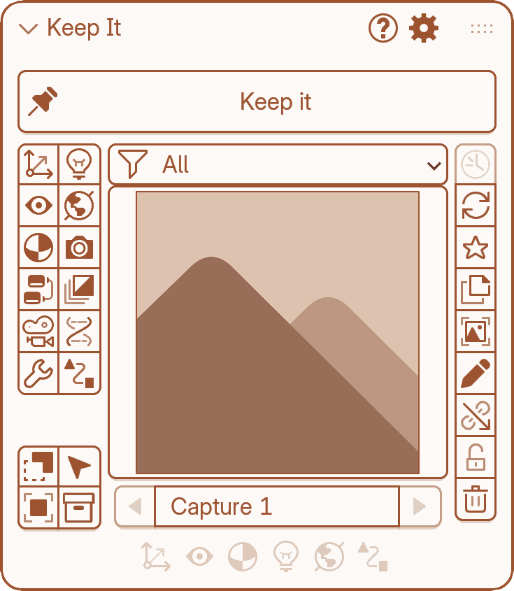
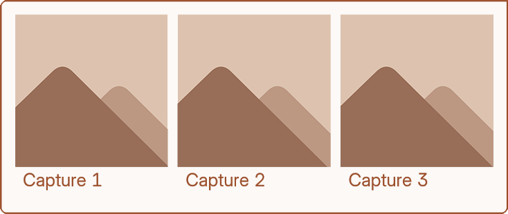
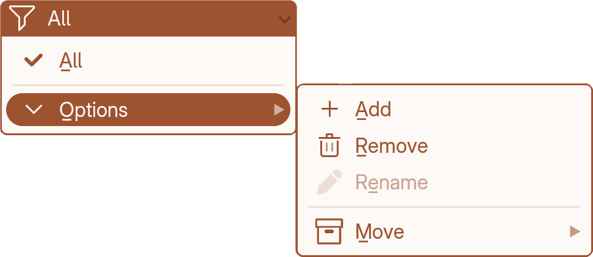
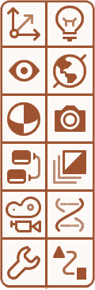
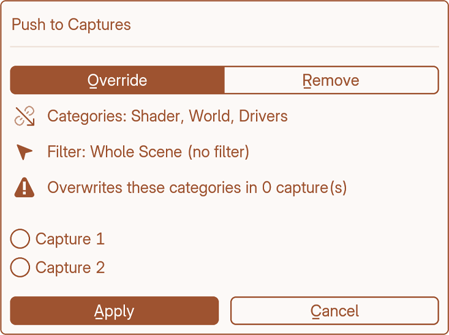
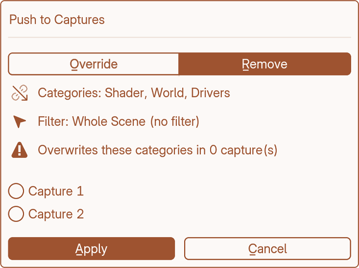
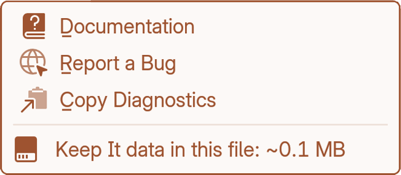

Main panel
1.0Overview
Keep it — Press it to take a capture of the current scene state across all enabled categories. The thumbnail is captured automatically from the viewport.
Restore — Click the big thumbnail. The capture is applied through the categories that are currently switched on, so switching one off leaves that part of the scene alone.
Name field — Each capture has an editable name. Rename it directly in the field below the thumbnail.
Icons — The bottom row of icons shows what data the current capture has.

Thumbnail gallery
Your captures are displayed as a browsable image picker. Click through them to select one. You can also step forward and backward with the arrow buttons flanking the name field.
Hovering over a capture reveals when it was stored and what it contains.

Groups
Captures can be organised into named groups. A dropdown above the thumbnail lets you filter the gallery by group, keeping large collections manageable.

Category toggles
A grid of icon buttons down the left side chooses which parts of the scene your captures include. Only enabled categories are saved when you capture, and only those are restored.
What each one stores: Capture Categories. All icons at a glance: Cheat Sheet.
- Transforms
- Visibility
- Shader Nodes
- Node Group
- Active Cam.
- Modifier

- Lights
- World
- Render Prop.
- Compositor
- Custom Prop.
- Drivers
Push
Use it when the scene has improved and your captures should catch up. One lighting fix pushed into ten captures, instead of redoing each.
It acts only on the categories and scope you have switched on, so everything else stays untouched.
Override — Writes the current scene state into the ticked captures. Whatever those categories held before is replaced.
Remove — Strips those categories back out of the ticked captures.


Help
Documentation — Opens this site in your browser.
Report a Bug — Opens a link where you can report a problem.
Copy Diagnostics — Copies a short summary of your setup to the clipboard, ready to paste into a bug report.
Below those, a line shows roughly how much space your captures and thumbnails take up in this file.
